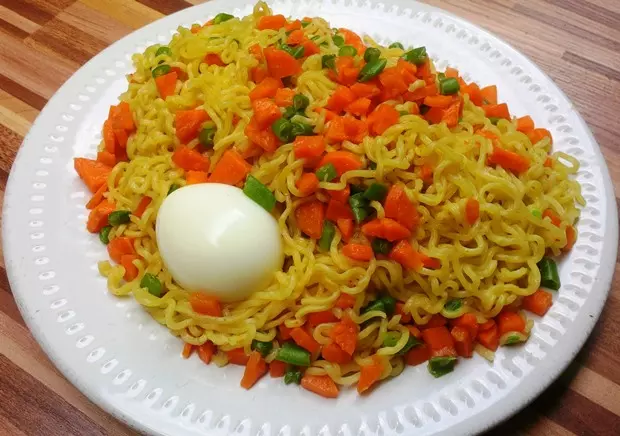

Noodles

Description
Ingredients
- 2 Eggs
- 1 Cup Diced Carrots
- 1/2 Cup Chopped Green bean
- 200 g Noodles
- Noodle spices
steps:
- Set a pot on heat, add two cups of water and allow to boil
- Dice the carrots and chop the green bean
- Boil eggs separately, deshell and set aside.
- In the pot with boiling water, combine noodles, carrots, and green beans
- Allow cooking for 3 minutes, add the follow come spices, allow another minute.
Back to home